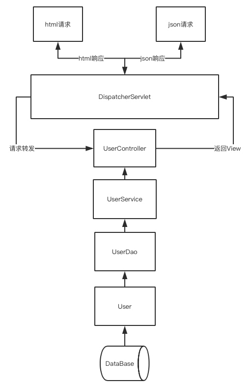
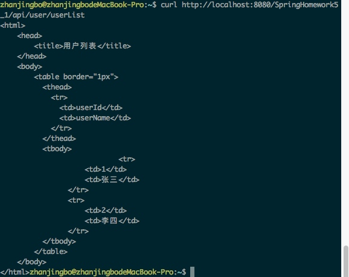
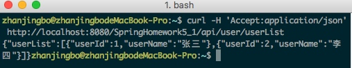

Java容器框架分析（二）——ArrayList源码解析
ArrayList简介
ArrayList实现了List接口，是顺序容器（即元素存放的顺序和加入列表的顺序相同），允许放入null元素，底层通过数组实现。该实现除了没有实现多线程同步之外，其余跟Vector大致相同，即ArrayList是线程不安全的。
每个ArrayList都一个容量（Capacity）属性，表示底层数组的实际大小，容器内存储元素的个数不大于当前的容量。当向容器中添加元素时，如果容量不足，容器会自动增大底层数组的大小。前面已经提过，Java 泛型只是编译器提供的语法糖，所以这里的数组是一个 Object 数组，以便能够容纳任何类型的对象。
size(), isEmpty(), get(), set() 方法均能在常数时间内完成，add() 方法的时间开销跟插入位置有关，addAll() 方法的时间开销跟添加元素的个数成正比。其余方法大都是线性时间。
为追求效率，ArrayList 没有实现同步（synchronized），如果需要多个线程并发访问，用户可以手动同步，也可使用 Vector 替代。

常用方法剖析
set(int index, E element)
set()方法可以直接设定某个下标对应的元素。既然ArrayList的底层是数组实现的，set()方法的实现也就变得极为简单，直接赋值即可，复杂度为O(1)。
public E set(int index, E element) {
rangeCheck(index);//下标越界检查
E oldValue = elementData(index);
elementData[index] = element;//赋值到指定位置，复制的仅仅是引用
return oldValue;
}
get(int index)
get()方法可以获取指定下标对应的对象，唯一需要注意的是由于底层数组是Object[]，得到元素后需要进行类型转换，复杂度为O(1)。
public E get(int index) {
rangeCheck(index);
return (E) elementData[index];//注意类型转换
}
add(E element)和add（int index,E element）
跟C++的vector不同，ArrayList没有push_back()方法，对应的方法是add(E e)，ArrayList也没有insert()方法，对应的方法是add(int index, E e)。这两个方法都是向容器中添加新元素，这可能会导致 capacity 不足，因此在添加元素之前，都需要进行剩余空间检查，如果需要则自动扩容。扩容操作最终是通过grow()方法完成的。
private void grow(int minCapacity) {
int oldCapacity = elementData.length;
int newCapacity = oldCapacity + (oldCapacity >> 1);//原来的1.5倍
if (newCapacity - minCapacity < 0)
newCapacity = minCapacity;
if (newCapacity - MAX_ARRAY_SIZE > 0)
newCapacity = hugeCapacity(minCapacity);
elementData = Arrays.copyOf(elementData, newCapacity);//扩展空间并复制
}
由于Java GC自动管理了内存，这里也就不需要考虑源数组释放的问题。

空间的问题解决之后，插入就变得非常简单了。

add(int index,E e)需要先对元素进行移动，然后完成插入，该方法时间复杂度为O(n)。
addAll()
addAll()方法可以一次添加多个元素，根据插入的起始位置不同也用两个版本：一个是在末尾添加addAll(Collection<? extends E> c);一个是从指定位置开始插入的addAll(int index, Collection<? extends E> c)方法。对应的实现方式和上述的add方法类似，在插入之前，需要对容量进行判断，如果需要则自动扩容，如果从指定位置插入，还需要先对数组元素进行移动。
remove()
remove方法可以删除列表中的元素，其也有两个版本：一个是remove(int index)删除指定位置的元素；一个是remove(Object o)删除第一个满足o.equals(elementData[index])的元素。删除操作是add()的逆过程，需要将删除点之后的元素向前移动一个位置。需要注意的是为了让GC起作用，必选显示的为最后一个位置赋null值。
public E remove(int index) {
rangeCheck(index);
modCount++;
E oldValue = elementData(index);
int numMoved = size - index - 1;
if (numMoved > 0)
System.arraycopy(elementData, index+1, elementData, index, numMoved);
elementData[--size] = null; //清除该位置的引用，让GC起作用
return oldValue;
}
关于Java GC 这里需要特别说明一下，有了垃圾收集器并不意味着一定不会有内存泄漏。对象能否被 GC 的依据是是否还有引用指向它，上面代码中如果不手动赋null值，除非对应的位置被其他元素覆盖，否则原来的对象就一直不会被回收。
使用技巧
关于List的容量，可以在一开始就给定一个比较合理的值，避免内存复制所带来的不必要的时间开销。
转载声明
本文转载自：https://github.com/CarpenterLee/JCFInternals
作者：CarpenterLee
Java容器框架分析（一）——相关概念综述
概述
容器，就是用于容纳其它对象的对象。在Java API中已经实现了很多常用的容器统称为Java Collections Framework（JCF）。JCF起始于JDK 1.2 使用JCF的优点在于：
- 降低编程难度
- 提高程序性能
- 提高API之间的互操作性
- 降低学习难度
- 降低设计和实现相关API的难度
- 增强程序的重用性
Java容器只能存放对象，对于基础类型（如int、double、float等），需要将其包装成对应的包装类型对象后才能放到容器之中，当然很多情况之下拆包和解包过程可以由虚拟机自动完成。
泛型
Java 容器能够容纳任何类型的对象，这一点表面上是通过泛型机制完成，Java 泛型不是什么神奇的东西，只是编译器为我们提供的一个 “语法糖”，泛型本身并不需要Java虚拟机的支持，只需要在编译阶段做一下简单的字符串替换即可。实质上Java的单继承机制才是保证这一特性的根本，因为所有的对象都是Object的子类，容器里只要能够存放Object对象就行了。
事实上，所有容器的内部存放的都是Object对象，泛型机制只是简化了编程，由编译器自动帮我们完成了强制类型转换和类型检测而已。JDK 1.4 以及之前版本不支持泛型，类型转换需要程序员显式完成。
//JDK 1.4 or before
ArrayList list = new ArrayList();
list.add(new String("Monday"));
list.add(new String("Tuesday"));
list.add(new String("Wensday"));
for(int i = 0; i < list.size(); i++){
String weekday = (String)list.get(i);//显式类型转换
System.out.println(weekday.toUpperCase());
}
//JDK 1.5 or latter
ArrayList<String> list = new ArrayList<String>();//参数化类型
list.add(new String("Monday"));
list.add(new String("Tuesday"));
list.add(new String("Wensday"));
for(int i = 0; i < list.size(); i++){
String weekday = list.get(i);//隐式类型转换，编译器自动完成
System.out.println(weekday.toUpperCase());
}
内存管理
Java不需要程序员来管理内存回收，而是有着一套自动的垃圾回收机制。另外，由于Java里的对象都在堆上，所以容器中放的其实是对象的引用而不是对象本身，这就避免了容器对象的拷贝复制问题。
接口与实现
接口
为了规范容器的行为，统一设计，JCF定义了14种容器接口，他们之间的关系如下图:

Map接口并没有继承自Collection接口，因为Map表示的是关联式容器而不是集合，但是Java在Map接口中提供了从Map转化为Collection的方法，可以方便的将Map切换到集合视图。上图中提供了Queue接口，却没有Stack接口，是因为在JDk 1.6之后Stack接口的功能已经被Deque取代。
实现
上述接口的通用实现类见下表：

迭代器（Iterator）
跟C++的STL一样，JCF的迭代器为我们提供了遍历容器中元素的方法，只有容器本身清楚容器里元素的组织方式，因此迭代器只能通过容器本身得到。每个容器都会通过内部类的形式来实现自己的迭代器，相比C++ STL的迭代器，JCF的迭代器更容易使用。
实例代码：
//通过迭代器来访问容器元素
ArrayList<String> list = new ArrayList<String>();
list.add(new String("Monday"));
list.add(new String("Tuesday"));
list.add(new String("Wensday"));
//得到迭代器
Iterator<String> it = list.iterator();
while(it.hasNext()){
String weekday = it.next();//访问元素
System.out.println(weekday.toUpperCase());
}
//JDK 1.5引入了增强的for循环，简化了迭代容器时的写法。
//使用foreach迭代
ArrayList<String> list = new ArrayList<String>();
list.add(new String("Monday"));
list.add(new String("Tuesday"));
list.add(new String("Wensday"));
for(String weekday : list){
System.out.println(weekday.toUpperCase());
}
声明
本系列博文装载自：https://github.com/CarpenterLee/JCFInternals
作者：CarpenterLee


网易Java Web微专业Spring-Web框架单元作业
完成包含以下功能的Web工程，提供一个接口，该接口可以根据需要（扩展名，Accep头）返回一个HTML文档或者JSON数据，要求：
返回的JSON数据是一个用户列表，每个用户包含两个信息：用户Id（userId），用户名（userName），最终的数据类似：
{"userList" : [
{
"userId": 1001,
"userName": "test1"
},
{
"userId": 1002,
"userName": "test2"
}
...
]}
2. 返回的HTML文档基于FreeMarker生成，内容是一个用户列表的表格，对HTML表格不熟悉的同学可以参考 http://www.w3school.com.cn/tiy/t.asp?f=html_tables 了解；
3. 以自己能力为基础，返回的数据可以是接口内直接返回的，也可以是从数据库表里查询出来的（加分）；
4. 尽可能根据项目模板里介绍的内容组织代码及资源。
项目架构

相关概念
SpringMVC
SpringMVC是Spring自身提供的一套基于MVC设计理念的开发框架，用于替代安全性较低的Sturts框架
JSON
JSON(JavaScript Object Notation) 是一种轻量级的数据交换格式。它基于ECMAScript的一个子集。 JSON采用完全独立于语言的文本格式，但是也使用了类似于C语言家族的习惯（包括C、C++、C#、Java、JavaScript、Perl、Python等）。这些特性使JSON成为理想的数据交换语言。 易于人阅读和编写，同时也易于机器解析和生成(一般用于提升网络传输速率)。
视图解析器
控制器在选择好适合处理请求的方法时，传入收到的请求(根据方法参数类型，可能以不同的类型传入)，并且 调用该方法中的逻辑来进行处理(也可以是调用Service来真正处理)。方法逻辑可能也会在参数中添加或者删除数据。处理方法处理完之后，会委派给一个 视图，由该视图来处理方法的返回值。处理程序的返回值并不代表视图的具体实现，可以只是String类型，代表视图名，甚至是void(这时候 Spring MVC可以根据方法名或者控制器名找默认视图)。也不需要担心返回值只是视图名称的话，视图拿不到要显示的数据。因为方法参数对于视图来说也是可以拿到 的。比如说，如果处理方法以Map为参数，那么这个Map对于视图也是可以拿到的。
返回的视图名称会返回给DispatcherServlet，它会根据一个视图解析器将视图名称解析为一个具体的视图实现。这里说到的视图解析器是一个实现了ViewResolver借口的Bean，它的任务就是返回一个视图的具体实现(HTML、jsonp、json等等)。
内容协商视图解析器
可以根据请求的内容，自动匹配对应的视图解析器，对视图进行解析。
作业实现
我们按照模块图有下自上对本次作业实现进行说明。
User模型
package site.zhanjingbo.course.meta; public class User { private int userId; private String userName; public int getUserId() { return userId; } public void setUserId(int userId) { this.userId = userId; } public String getUserName() { return userName; } public void setUserName(String userName) { this.userName = userName; } }UserDao。User数据库访问接口
package site.zhanjingbo.course.dao; import java.util.List; import site.zhanjingbo.course.meta.User; public interface UserDao { public List<User> getUserList(); }UserDaoMapper。使用Mybatis对UserDao进行实现。
<?xml version="1.0" encoding="UTF-8" ?> <!DOCTYPE mapper PUBLIC "-//mybatis.org//DTD Mapper 3.0//EN" "http://mybatis.org/dtd/mybatis-3-mapper.dtd"> <mapper namespace="site.zhanjingbo.course.dao.UserDao"> <resultMap type="User" id="UserResult"> <result property="userId" column="userId" /> <result property="userName" column="userName" /> </resultMap> <select id="getUserList" resultMap="UserResult"> select * from user </select> </mapper>UserService。User的对应业务逻辑层
package site.zhanjingbo.course.service.impl; import java.util.List; import javax.annotation.Resource; import org.springframework.stereotype.Service; import site.zhanjingbo.course.dao.UserDao; import site.zhanjingbo.course.meta.User; import site.zhanjingbo.course.service.UserService; @Service public class UserServiceImpl implements UserService { @Resource private UserDao userDao; public List<User> getUserList() { return userDao.getUserList(); } }UserController。User的控制器层，调用业务逻辑，返回对应视图名称和数据。
package site.zhanjingbo.course.web.controller; import javax.annotation.Resource; import org.springframework.stereotype.Controller; import org.springframework.web.bind.annotation.RequestMapping; import org.springframework.web.servlet.ModelAndView; import site.zhanjingbo.course.service.UserService; @Controller @RequestMapping("/user") public class UserController { @Resource private UserService userService; @RequestMapping("/userList") public ModelAndView getUserList() { ModelAndView mav = new ModelAndView(); mav.setViewName("userList"); mav.addObject("userList", userService.getUserList()); return mav; } }userList.ftl。使用FreeMarker渲染的视图文件
<html> <head> <title>用户列表</title> </head> <body> <table border="1px"> <thead> <tr> <td>userId</td> <td>userName</td> </tr> </thead> <tbody> <#list userList as user> <tr> <td>${user.userId}</td> <td>${user.userName}</td> </tr> </#list> </tbody> </table> </body> </html>DispatcherServlet的配置文件，主要配置对应View的渲染方案，即内容协商视图响应。
<beans xmlns="http://www.springframework.org/schema/beans" xmlns:context="http://www.springframework.org/schema/context" xmlns:mvc="http://www.springframework.org/schema/mvc" xmlns:xsi="http://www.w3.org/2001/XMLSchema-instance" xsi:schemaLocation=" http://www.springframework.org/schema/beans http://www.springframework.org/schema/beans/spring-beans.xsd http://www.springframework.org/schema/context http://www.springframework.org/schema/context/spring-context.xsd http://www.springframework.org/schema/mvc http://www.springframework.org/schema/mvc/spring-mvc.xsd"> <context:component-scan base-package="site.zhanjingbo.course.web.controller" /> <bean id="contentNegotiationManager" class="org.springframework.web.accept.ContentNegotiationManagerFactoryBean"> <!-- 扩展名至mimeType的映射,即 /user.json => application/json --> <property name="favorPathExtension" value="true" /> <!-- 用于开启 /userinfo/123?format=json 的支持 --> <property name="favorParameter" value="true" /> <property name="parameterName" value="format" /> <!-- 是否忽略Accept Header --> <property name="ignoreAcceptHeader" value="false" /> <property name="mediaTypes"> <map> <entry key="json" value="application/json" /> <entry key="xml" value="application/xml" /> </map> </property> <!-- 默认的content type --> <property name="defaultContentType" value="text/html" /> </bean> <!-- freeMarker --> <bean id="freemarkerConfig" class="org.springframework.web.servlet.view.freemarker.FreeMarkerConfigurer"> <property name="templateLoaderPath" value="/freemarker/" /> </bean> <bean class="org.springframework.web.servlet.view.ContentNegotiatingViewResolver"> <property name="contentNegotiationManager" ref="contentNegotiationManager" /> <property name="viewResolvers"> <list> <bean id="viewResolver" class="org.springframework.web.servlet.view.freemarker.FreeMarkerViewResolver"> <property name="cache" value="true" /> <property name="prefix" value="" /> <property name="suffix" value=".ftl" /> <property name="contentType" value="text/html; charset=utf-8" /> </bean> </list> </property> <property name="defaultViews"> <list> <!-- JSON --> <bean class="org.springframework.web.servlet.view.json.MappingJackson2JsonView" /> <!-- XML --> <bean class="org.springframework.web.servlet.view.xml.MarshallingView"> <property name="marshaller"> <bean class="org.springframework.oxm.xstream.XStreamMarshaller" /> </property> </bean> </list> </property> </bean> </beans>
结果展示
为了更好的展示不同URL后缀以及不同Accept头对应的不同返回结果，我们使用curl命令对项目进行请求，观察返回结果。
无后缀，默认URL
curl http://localhost:8080/SpringHomework5_1/api/user/userList
html后缀
http://localhost:8080/SpringHomework5_1/api/user/userList.html
JSON后缀
http://localhost:8080/SpringHomework5_1/api/user/userList.json
XML后缀
curl http://localhost:8080/SpringHomework5_1/api/user/userList.xml
JSON头
curl -H 'Accept:application/json' http://localhost:8080/SpringHomework5_1/api/user/userList
XML头
curl -H 'Accept:application/xml' http://localhost:8080/SpringHomework5_1/api/user/userList
总结
虽然完成了目标任务，但是对于Spring整合其它框架以及SpringMVC的相关功能的具体熟悉还需要进一步学习。
代码


Copyright © 2016 swuzjb